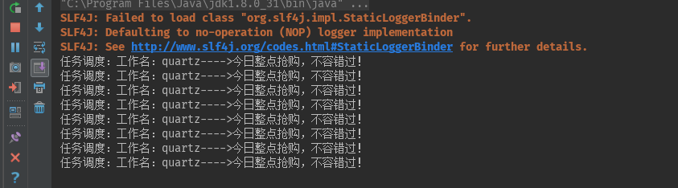
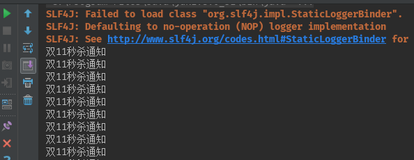
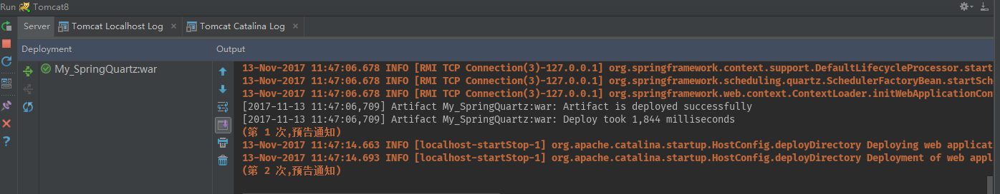

版本：
Quartz 2.2.3
Quartz 是一种功能丰富的，开放源码的作业调度库，可以在几乎任何Java应用程序集成 - 从最小的独立的应用程序到规模最大电子商务系统。Quartz可以用来创建简单或复杂的日程安排执行几十，几百，甚至是十万的作业数 - 作业被定义为标准的Java组件，可以执行几乎任何东西，可以编程让它们执行。 Quartz调度包括许多企业级功能，如JTA事务和集群支持。 Quartz 是可自由使用，使用Apache 2.0 license授权方式。
Quartz是一个任务调度框架。比如你遇到这样的问题 想每月29号，信用卡自动还款 想每年4月1日自己给当年暗恋女神发一封匿名贺卡 想每隔1小时，备份一下自己的学习笔记到云盘
这些问题总结起来就是：在某一个有规律的时间点干某件事。并且时间的触发的条件可以非常复杂（比如每月最后一个工作日的17:50），复杂到需要一个专门的框架来干这个事。 Quartz就是来干这样的事，你给它一个触发条件的定义，它负责到了时间点，触发相应的Job起来干活
如果应用程序需要在给定时间执行任务，或者如果系统有连续维护作业，那么Quartz是理想的解决方案。 使用Quartz作业调度应用的示例： 驱动处理工作流程：作为一个新的订单被初始化放置，调度作业到在正好两个小时内，它将检查订单的状态，如果订单确认消息尚未收到命令触发警告通知，以及改变订单的状态为“等待的干预”。 系统维护：调度工作给数据库的内容，每个工作日（节假日除外平日）在11:30 PM转储到一个XML文件中。 在应用程序内提供提醒服务。
Quartz 可以运行嵌入在另一个独立式应用程序 Quartz 可以在应用程序服务器(或servlet容器)内被实例化，并且参与XA事务 Quartz 可以作为一个独立的程序运行(其自己的Java虚拟机内)，可以通过RMI使用 Quartz 可以被实例化，作为独立的项目集群(负载平衡和故障转移功能)，用于作业的执行
作业被安排在一个给定的触发时运行。触发器可以使用以下指令的接近任何组合来创建： 在一天中的某个时间（到毫秒） 在一周的某几天 在每月的某一天 在一年中的某些日期 不在注册的日历中列出的特定日期（如商业节假日除外） 重复特定次数 重复进行，直到一个特定的时间/日期 无限重复 重复的延迟时间间隔
作业是由其创建者赋予的名字，也可以组织成命名组。触发器也可以给予名称和放置在组中，以方便地将它们调度内组织。作业可以被添加到所述调度器一次，而是具有多个触发器注册。在企业Java环境中，作业可以执行自己的工作作为分布式（XA）事务的一部分
作业可以实现简单的作业接口，为作业执行工作的任何Java类。 Job类的实例可以通过Quartz被实例化，或者通过应用程序框架。 当触发时，调度通知实现JobListener和TriggerListener接口零个或多个Java对象（监听器可以是简单的Java对象，或EJB，JMS或发布者等）。这些监听器在作业已经执行之后通知。 由于作业完成后返回JobCompletionCode，它通知的成功或失败的调度。JobCompletionCode还可以指示的基础上，成功的话就采取行动调度/失败的代码 - 如立即重新执行作业。
Quartz的设计包括可被实现以提供的作业存储各种机制一个作业存储接口 通过使用包含的JDBCJobStore，所有的作业和触发器配置为“非挥发性”都存储在通过JDBC关系数据库。 通过使用包含的RAMJobStore，所有的作业和触发器存储在RAM，因此不计划执行仍然存在 - 但这是无需使用外部数据库的优势。
Maven+Idea
pom.xml
xxxxxxxxxx<dependencies> <!--Quartz任务调度--> <!-- https://mvnrepository.com/artifact/org.quartz-scheduler/quartz --> <dependency> <groupId>org.quartz-scheduler</groupId> <artifactId>quartz</artifactId> <version>2.2.3</version> </dependency> </dependencies>HelloQuartz 具体的工作类
xxxxxxxxxx/** * 工作类的具体实现 * */public class HelloQuartz implements Job { //执行 public void execute(JobExecutionContext context) throws JobExecutionException { //创建工作详情 JobDetail detail=context.getJobDetail(); //获取工作的名称 String name=detail.getJobDataMap().getString("name"); String job=detail.getJobDataMap().getString("job1"); System.out.println("任务调度：组："+job+",工作名："+name+"---->今日整点抢购，不容错过！"); }}Quartz_1 运行任务调度类
xxxxxxxxxxpublic static void main(String[] args) { try{ //创建scheduler，执行计划 Scheduler scheduler = StdSchedulerFactory.getDefaultScheduler(); //定义一个Trigger,触发条件类 Trigger trigger = TriggerBuilder.newTrigger(). withIdentity("trigger1", "group1") //定义name/group .startNow()//一旦加入scheduler，立即生效 .withSchedule(SimpleScheduleBuilder.simpleSchedule() //使用SimpleTrigger .withIntervalInSeconds(1) //每隔一秒执行一次 .repeatForever()) //一直执行，奔腾到老不停歇 .build(); //定义一个JobDetail JobDetail job = JobBuilder.newJob(HelloQuartz.class) //定义Job类为HelloQuartz类，这是真正的执行逻辑所在 .withIdentity("job1", "group1") //定义name/group .usingJobData("name", "quartz") //定义属性 .build(); //加入这个调度 scheduler.scheduleJob(job, trigger); //启动任务调度 scheduler.start(); }catch (Exception ex){ ex.printStackTrace(); }}运行结果：

Scheduler：调度器。所有的调度都是由它控制
Scheduler就是Quartz的大脑，所有任务都是由它来设施
Schduelr包含一个两个重要组件: JobStore和ThreadPool
JobStore是会来存储运行时信息的，包括Trigger,Schduler,JobDetail，业务锁等
ThreadPool就是线程池，Quartz有自己的线程池实现。所有任务的都会由线程池执行SchdulerFactory，顾名思义就是来用创建Schduler了，有两个实现：DirectSchedulerFactory和 StdSchdulerFactory。前者可以用来在代码里定制你自己的Schduler参数。后者是直接读取classpath下的quartz.properties（不存在就都使用默认值）配置来实例化Schduler。通常来讲，我们使用StdSchdulerFactory也就足够了。 SchdulerFactory本身是支持创建RMI stub的，可以用来管理远程的Scheduler，功能与本地一样
quartz.properties 常用配置示例：
xxxxxxxxxxorg.quartz.scheduler.instanceName = DefaultQuartzSchedulerorg.quartz.threadPool.class = org.quartz.simpl.SimpleThreadPoolorg.quartz.threadPool.threadCount = 10 org.quartz.threadPool.threadPriority = 5org.quartz.threadPool.threadsInheritContextClassLoaderOfInitializingThread = trueorg.quartz.jobStore.class = org.quartz.simpl.RAMJobStoreTrigger： 定义触发的条件。可以使用SimpleTrigger，每隔1秒中执行一次
JobDetail & Job： JobDetail 定义的是任务数据，而真正的执行逻辑是在Job中。 为什么设计成JobDetail + Job，不直接使用Job？这是因为任务是有可能并发执行，如果Scheduler直接使用Job，就会存在对同一个Job实例并发访问的问题。而JobDetail & Job 方式，sheduler每次执行，都会根据JobDetail创建一个新的Job实例，这样就可以规避并发访问的问题
JobDetail和Trigger都有name和group。 name是它们在这个sheduler里面的唯一标识。如果我们要更新一个JobDetail定义，只需要设置一个name相同的JobDetail实例即可。 group是一个组织单元，sheduler会提供一些对整组操作的API，比如 scheduler.resumeJobs()。
StartTime & EndTime
StartTime & EndTime
startTime和endTime指定的Trigger会被触发的时间区间。在这个区间之外，Trigger是不会被触发的。 所有Trigger都会包含这两个属性
Priority
当scheduler比较繁忙的时候，可能在同一个时刻，有多个Trigger被触发了，但资源不足（比如线程池不足）。那么这个时候比剪刀石头布更好的方式，就是设置优先级。优先级高的先执行。 需要注意的是，优先级只有在同一时刻执行的Trigger之间才会起作用，如果一个Trigger是9:00，另一个Trigger是9:30。那么无论后一个优先级多高，前一个都是先执行。 优先级的值默认是5，当为负数时使用默认值。最大值似乎没有指定，但建议遵循Java的标准，使用1-10，不然鬼才知道看到【优先级为10】是时，上头还有没有更大的值。
Misfire
Misfire(错失触发）策略类似的Scheduler资源不足的时候，或者机器崩溃重启等，有可能某一些Trigger在应该触发的时间点没有被触发，也就是Miss Fire了。这个时候Trigger需要一个策略来处理这种情况。每种Trigger可选的策略各不相同。 这里有两个点需要重点注意： MisFire的触发是有一个阀值，这个阀值是配置在JobStore的。比RAMJobStore是org.quartz.jobStore.misfireThreshold。只有超过这个阀值，才会算MisFire。小于这个阀值，Quartz是会全部重新触发。 所有MisFire的策略实际上都是解答两个问题： 1. 已经MisFire的任务还要重新触发吗？ 2. 如果发生MisFire，要调整现有的调度时间吗？
SimpleTrigger的MisFire策略有
MISFIRE_INSTRUCTION_IGNORE_MISFIRE_POLICY
这个不是忽略已经错失的触发的意思，而是说忽略MisFire策略。它会在资源合适的时候，重新触发所有的MisFire任务，并且不会影响现有的调度时间。 比如，SimpleTrigger每15秒执行一次，而中间有5分钟时间它都MisFire了，一共错失了20个，5分钟后，假设资源充足了，并且任务允许并发，它会被一次性触发。 这个属性是所有Trigger都适用。
MISFIRE_INSTRUCTION_FIRE_NOW
忽略已经MisFire的任务，并且立即执行调度。这通常只适用于只执行一次的任务。
MISFIRE_INSTRUCTION_RESCHEDULE_NOW_WITH_EXISTING_REPEAT_COUNT
将startTime设置当前时间，立即重新调度任务，包括的MisFire的 MISFIRE_INSTRUCTION_RESCHEDULE_NOW_WITH_REMAINING_REPEAT_COUNT 类似MISFIRE_INSTRUCTION_RESCHEDULE_NOW_WITH_EXISTING_REPEAT_COUNT，区别在于会忽略已经MisFire的任务
MISFIRE_INSTRUCTION_RESCHEDULE_NEXT_WITH_EXISTING_COUNT
在下一次调度时间点，重新开始调度任务，包括的MisFire的 MISFIRE_INSTRUCTION_RESCHEDULE_NEXT_WITH_REMAINING_COUNT 类似于MISFIRE_INSTRUCTION_RESCHEDULE_NEXT_WITH_EXISTING_COUNT，区别在于会忽略已经MisFire的任务。
MISFIRE_INSTRUCTION_SMART_POLICY
所有的Trigger的MisFire默认值都是这个，大致意思是“把处理逻辑交给聪明的Quartz去决定”。基本策略是， 如果是只执行一次的调度，使用MISFIRE_INSTRUCTION_FIRE_NOW 如果是无限次的调度(repeatCount是无限的)，使用MISFIRE_INSTRUCTION_RESCHEDULE_NEXT_WITH_REMAINING_COUNT 否则，使用MISFIRE_INSTRUCTION_RESCHEDULE_NOW_WITH_EXISTING_REPEAT_COUNT
Calendar
Calendar不是jdk的java.util.Calendar，不是为了计算日期的。它的作用是在于补充Trigger的时间。可以排除或加入某一些特定的时间点。 以”每月29日零点自动还信用卡“为例，我们想排除掉每年的2月29号零点这个时间点（因为平年和润年2月不一样）。这个时间，就可以用Calendar来实现
Quartz提供以下几种Calendar，注意，所有的Calendar既可以是排除，也可以是包含，取决于： HolidayCalendar。指定特定的日期，比如20140613。精度到天。 DailyCalendar。指定每天的时间段（rangeStartingTime, rangeEndingTime)，格式是HH:MM[:SS[:mmm]]。也就是最大精度可以到毫秒。 WeeklyCalendar。指定每星期的星期几，可选值比如为java.util.Calendar.SUNDAY。精度是天。 MonthlyCalendar。指定每月的几号。可选值为1-31。精度是天 AnnualCalendar。 指定每年的哪一天。使用方式如上例。精度是天。 CronCalendar。指定Cron表达式。精度取决于Cron表达式，也就是最大精度可以到秒。
SimpleTrigger
指定从某一个时间开始，以一定的时间间隔（单位是毫秒）执行的任务。 它适合的任务类似于：9:00 开始，每隔1小时，执行一次。 它的属性有： repeatInterval 重复间隔 repeatCount 重复次数。实际执行次数是 repeatCount+1。因为在startTime的时候一定会执行一次。
示例：
SimpleScheduleBuilder.simpleSchedule().
withIntervalInSeconds(10).//每隔10秒执行一次
repeatForever().//永远执行
build();SimpleScheduleBuilder.simpleSchedule().
withIntervalInMinutes(3).//每隔3分钟执行一次
withRepeatCount(3).//执行3次
build();CalendarIntervalTrigger
类似于SimpleTrigger，指定从某一个时间开始，以一定的时间间隔执行的任务。 但是不同的是SimpleTrigger指定的时间间隔为毫秒，没办法指定每隔一个月执行一次（每月的时间间隔不是固定值），而CalendarIntervalTrigger支持的间隔单位有秒，分钟，小时，天，月，年，星期。 相较于SimpleTrigger有两个优势：1、更方便，比如每隔1小时执行，你不用自己去计算1小时等于多少毫秒。 2、支持不是固定长度的间隔，比如间隔为月和年。但劣势是精度只能到秒。 它适合的任务类似于：9:00 开始执行，并且以后每周 9:00 执行一次 它的属性有: interval 执行间隔 intervalUnit 执行间隔的单位（秒，分钟，小时，天，月，年，星期）
示例：
CalendarIntervalScheduleBuilder.calendarIntervalSchedule().
withIntervalInDays(2) //每2天执行一次
.build();CalendarIntervalScheduleBuilder.calendarIntervalSchedule().
withIntervalInWeeks(1) //每周执行一次
.build();DailyTimeIntervalTrigger
指定每天的某个时间段内，以一定的时间间隔执行任务。并且它可以支持指定星期。 它适合的任务类似于：指定每天9:00 至 18:00 ，每隔70秒执行一次，并且只要周一至周五执行。 它的属性有: startTimeOfDay 每天开始时间 endTimeOfDay 每天结束时间 daysOfWeek 需要执行的星期 interval 执行间隔 intervalUnit 执行间隔的单位（秒，分钟，小时，天，月，年，星期） repeatCount 重复次数
示例：
DailyTimeIntervalScheduleBuilder.dailyTimeIntervalSchedule()
.startingDailyAt(TimeOfDay.hourAndMinuteOfDay(9, 0)) //每天9：00开始
.endingDailyAt(TimeOfDay.hourAndMinuteOfDay(18, 0)) //18：00 结束 .onDaysOfTheWeek(MONDAY,TUESDAY,WEDNESDAY,THURSDAY,FRIDAY) //周一至周五执行
.withIntervalInHours(1) //每间隔1小时执行一次
.withRepeatCount(100) //最多重复100次（实际执行100+1次）
.build();
DailyTimeIntervalScheduleBuilder.dailyTimeIntervalSchedule()
.startingDailyAt(TimeOfDay.hourAndMinuteOfDay(10, 0)) //每天10：00开始
.endingDailyAfterCount(10) //每天执行10次，这个方法实际上根据 startTimeOfDay+interval*count 算出 endTimeOfDay
.onDaysOfTheWeek(MONDAY,TUESDAY,WEDNESDAY,THURSDAY,FRIDAY) //周一至周五执行
.withIntervalInHours(1) //每间隔1小时执行一次
.build();CronTrigger
适合于更复杂的任务，它支持类型于Linux Cron的语法（并且更强大）。基本上它覆盖了以上三个Trigger的绝大部分能力（但不是全部）—— 当然，也更难理解。 它适合的任务类似于：每天0:00,9:00,18:00各执行一次。 它的属性只有: Cron表达式。但这个表示式本身就够复杂了
示例：
CronScheduleBuilder.cronSchedule("0 0/2 10-12 * * ?") // 每天10:00-12:00，每隔2分钟执行一次
.build();cronSchedule("0 30 9 ? * MON") // 每周一，9:30执行一次
.build();CronScheduleBuilder.weeklyOnDayAndHourAndMinute(MONDAY,9, 30) //等同于 0 30 9 ? * MON .build();
| 位置 | 时间域 | 允许值 | 特殊值 |
|---|---|---|---|
| 1 | 秒 | 0-59 | , - * / |
| 2 | 分钟 | 0-59 | , - * / |
| 3 | 小时 | 0-23 | , - * / |
| 4 | 日期 | 1-31 | , - * ? / L W C |
| 5 | 月份 | 1-12 | , - * / |
| 6 | 星期 | 1-7 | , - * ? / L C # |
| 7 | 年份（可选） | 1-31 | , - * / |
星号()：可用在所有字段中，表示对应时间域的每一个时刻，例如， 在分钟字段时，表示“每分钟”； 问号（?）：该字符只在日期和星期字段中使用，它通常指定为“无意义的值”，相当于点位符； 减号(-)：表达一个范围，如在小时字段中使用“10-12”，则表示从10到12点，即10,11,12； 逗号(,)：表达一个列表值，如在星期字段中使用“MON,WED,FRI”，则表示星期一，星期三和星期五； 斜杠(/)：x/y表达一个等步长序列，x为起始值，y为增量步长值。如在分钟字段中使用0/15，则表示为0,15,30和45秒，而5/15在分钟字段中表示5,20,35,50，你也可以使用*/y，它等同于0/y； L：该字符只在日期和星期字段中使用，代表“Last”的意思，但它在两个字段中意思不同。L在日期字段中，表示这个月份的最后一天，如一月的31号，非闰年二月的28号；如果L用在星期中，则表示星期六，等同于7。但是，如果L出现在星期字段里，而且在前面有一个数值X，则表示“这个月的最后X天”，例如，6L表示该月的最后星期五； W：该字符只能出现在日期字段里，是对前导日期的修饰，表示离该日期最近的工作日。例如15W表示离该月15号最近的工作日，如果该月15号是星期六，则匹配14号星期五；如果15日是星期日，则匹配16号星期一；如果15号是星期二，那结果就是15号星期二。但必须注意关联的匹配日期不能够跨月，如你指定1W，如果1号是星期六，结果匹配的是3号星期一，而非上个月最后的那天。W字符串只能指定单一日期，而不能指定日期范围； LW组合：在日期字段可以组合使用LW，它的意思是当月的最后一个工作日； 井号(#)：该字符只能在星期字段中使用，表示当月某个工作日。如6#3表示当月的第三个星期五(6表示星期五，#3表示当前的第三个)，而4#5表示当月的第五个星期三，假设当月没有第五个星期三，忽略不触发； C：该字符只在日期和星期字段中使用，代表“Calendar”的意思。它的意思是计划所关联的日期，如果日期没有被关联，则相当于日历中所有日期。例如5C在日期字段中就相当于日历5日以后的第一天。1C在星期字段中相当于星期日后的第一天。
表达式示例：
| 表示式 | 说明 |
|---|---|
| 0 0 12 * * ? | 每天12点运行 |
| 0 15 10 ? * * | 每天10:15运行 |
| 0 15 10 * * ? | 每天10:15运行 |
| 0 15 10 * * ? * | 每天10:15运行 |
| 0 15 10 * * ? 2008 | 在2008年的每天10：15运行 |
| 0 * 14 * * ? | 每天14点到15点之间每分钟运行一次，开始于14:00，结束于14:59。 |
| 0 0/5 14 * * ? | 每天14点到15点每5分钟运行一次，开始于14:00，结束于14:55。 |
| 0 0/5 14,18 * * ? | 每天14点到15点每5分钟运行一次，此外每天18点到19点每5钟也运行一次。 |
| 0 0-5 14 * * ? | 每天14:00点到14:05，每分钟运行一次。 |
| 0 10,44 14 ? 3 WED | 3月每周三的14:10分到14:44，每分钟运行一次。 |
| 0 15 10 ? * MON-FRI | 每周一，二，三，四，五的10:15分运行。 |
| 0 15 10 15 * ? | 每月15日10:15分运行。 |
| 0 15 10 L * ? | 每月最后一天10:15分运行。 |
| 0 15 10 ? * 6L | 每月最后一个星期五10:15分运行。 |
| 0 15 10 ? * 6L 2007-2009 | 在2007,2008,2009年每个月的最后一个星期五的10:15分运行。 |
| 0 15 10 ? * 6#3 | 每月第三个星期五的10:15分运行。 |
JobDetail是任务的定义，而Job是任务的执行逻辑。在JobDetail里会引用一个Job Class定义
任务步骤： 1、创建一个org.quartz.Job的实现类，并实现实现自己的业务逻辑。比如上面的DoNothingJob。 2、定义一个JobDetail，引用这个实现类 3、加入scheduleJob
核心代码： JobClass jobClass=JobDetail.getJobClass() Job jobInstance=jobClass.newInstance()。所以Job实现类，必须有一个public的无参构建方法。 jobInstance.execute(JobExecutionContext context)。JobExecutionContext是Job运行的上下文，可以获得Trigger、Scheduler、JobDetail的信息。 也就是说，每次调度都会创建一个新的Job实例，这样的好处是有些任务并发执行的时候，不存在对临界资源的访问问题——当然，如果需要共享JobDataMap的时候，还是存在临界资源的并发访问的问题。
JobDataMap
Job都次都是newInstance的实例，那我怎么传值给它？ 比如我现在有两个发送邮件的任务，一个是发给"liLei",一个发给"hanmeimei",不能说我要写两个Job实现类LiLeiSendEmailJob和HanMeiMeiSendEmailJob。实现的办法是通过JobDataMap。
每一个JobDetail都会有一个JobDataMap。JobDataMap本质就是一个Map的扩展类，只是提供了一些更便捷的方法，比如getString()之类的。
我们可以在定义JobDetail，加入属性值，方式有二：
第一种：
newJob().usingJobData("age", 18) //加入属性到ageJobDataMap
第二种：
job.getJobDataMap().put("name", "quertz"); //加入属性name到JobDataMap
在Job中可以获取这个JobDataMap的值，方式同样有二：
JobDetail detail = context.getJobDetail(); JobDataMap map = detail.getJobDataMap(); //方法一：获得JobDataMap
private String name;
//方法二：属性的setter方法，会将JobDataMap的属性自动注入
public void setName(String name) {
this.name = name;
}对于同一个JobDetail实例，执行的多个Job实例，是共享同样的JobDataMap，也就是说，如果你在任务里修改了里面的值，会对其他Job实例（并发的或者后续的）造成影响。 除了JobDetail，Trigger同样有一个JobDataMap，共享范围是所有使用这个Trigger的Job实例
job是有可能并发执行的，比如一个任务要执行10秒中，而调度算法是每秒中触发1次，那么就有可能多个任务被并发执行。 有时候我们并不想任务并发执行，比如这个任务要去”获得数据库中所有未发送邮件的名单“，如果是并发执行，就需要一个数据库锁去避免一个数据被多次处理。这个时候一个@DisallowConcurrentExecution解决这个问题
public class DoNothingJob implements Job {
@DisallowConcurrentExecution
public void execute(JobExecutionContext context) throws JobExecutionException {
System.out.println("操作");
}
}注意，@DisallowConcurrentExecution是对JobDetail实例生效，也就是如果你定义两个JobDetail，引用同一个Job类，是可以并发执行的
JobExecutionException Job.execute()方法是不允许抛出除JobExecutionException之外的所有异常的（包括RuntimeException)，所以编码的时候，最好是try-catch住所有的Throwable，小心处理。
代码示例：
xxxxxxxxxxpublic class MyJob implements Job { public void execute(JobExecutionContext context) throws JobExecutionException { System.out.println("双11秒杀通知"); }} xxxxxxxxxxpublic class Quartz_2 { public static void main(String[] args) throws Exception{ JobDetail job=newJob() .ofType(MyJob.class) //引用Job Class .withIdentity("job1", "group1") //设置name/group .withDescription("this is a test job") //设置描述 .usingJobData("age", 18) //加入属性到age,JobDataMap .build(); job.getJobDataMap().put("name", "quertz"); //加入属性name到JobDataMap //定义一个每秒执行一次的SimpleTrigger Trigger trigger=newTrigger() .startNow() .withIdentity("trigger1") .withSchedule(simpleSchedule() .withIntervalInSeconds(1) .repeatForever()) .build(); //创建任务调度对象 Scheduler sche= StdSchedulerFactory.getDefaultScheduler(); //添加工作计划 sche.scheduleJob(job, trigger); //启动任务调度 sche.start(); Thread.sleep(10000); //关闭任务调度 sche.shutdown(); }}
pom.xml
xxxxxxxxxx<project xmlns="http://maven.apache.org/POM/4.0.0" xmlns:xsi="http://www.w3.org/2001/XMLSchema-instance" xsi:schemaLocation="http://maven.apache.org/POM/4.0.0 http://maven.apache.org/maven-v4_0_0.xsd"> <modelVersion>4.0.0</modelVersion> <groupId>xph</groupId> <artifactId>My_SpringQuartz</artifactId> <packaging>war</packaging> <version>1.0</version> <name>My_SpringQuartz Maven Webapp</name> <url>http://maven.apache.org</url> <properties> <springframework.version>4.3.11.RELEASE</springframework.version> <quartz.version>2.2.3</quartz.version> </properties> <dependencies> <dependency> <groupId>org.springframework</groupId> <artifactId>spring-context</artifactId> <version>${springframework.version}</version> </dependency> <dependency> <groupId>org.springframework</groupId> <artifactId>spring-context-support</artifactId> <version>${springframework.version}</version> </dependency> <dependency> <groupId>org.springframework</groupId> <artifactId>spring-tx</artifactId> <version>${springframework.version}</version> </dependency> <dependency> <groupId>org.springframework</groupId> <artifactId>spring-web</artifactId> <version>${springframework.version}</version> </dependency> <dependency> <groupId>org.quartz-scheduler</groupId> <artifactId>quartz</artifactId> <version>${quartz.version}</version> </dependency> </dependencies> <build> <finalName>My_SpringQuartz</finalName> </build></project>spring-quartz.xml 基于Spring的Quartz的配置
xxxxxxxxxx <beans xmlns="http://www.springframework.org/schema/beans" xmlns:xsi="http://www.w3.org/2001/XMLSchema-instance" xsi:schemaLocation="http://www.springframework.org/schema/beans http://www.springframework.org/schema/beans/spring-beans.xsd"> <!-- Spring整合Quartz进行配置遵循下面的步骤： 1：定义工作任务的Job 2：定义触发器Trigger，并将触发器与工作任务绑定 3：定义调度器，并将Trigger注册到Scheduler --> <!-- 1：定义任务的bean ，这里使用JobDetailFactoryBean,也可以使用MethodInvokingJobDetailFactoryBean ，配置类似--> <bean name="lxJob" class="org.springframework.scheduling.quartz.JobDetailFactoryBean"> <!-- 指定job的名称 --> <property name="name" value="job1"/> <!-- 指定job的分组 --> <property name="group" value="group1"/> <!-- 指定具体的job类 --> <property name="jobClass" value="com.qf.web.quartz.MyJob"/> <!-- 必须设置为true，如果为false，当没有活动的触发器与之关联时会在调度器中会删除该任务 --> <property name="durability" value="true"/> <!-- 指定spring容器的key，如果不设定在job中的jobmap中是获取不到spring容器的 --> <property name="applicationContextJobDataKey" value="applicationContext"/> </bean> <!-- 2.2：定义触发器的bean，定义一个Cron的Trigger，一个触发器只能和一个任务进行绑定 --> <bean id="cronTrigger" class="org.springframework.scheduling.quartz.CronTriggerFactoryBean"> <!-- 指定Trigger的名称 --> <property name="name" value="hw_trigger"/> <!-- 指定Trigger的名称 --> <property name="group" value="hw_trigger_group"/> <!-- 指定Tirgger绑定的Job --> <property name="jobDetail" ref="lxJob"/> <!-- 指定Cron 的表达式 ，当前是每隔5s运行一次 --> <property name="cronExpression" value="0/5 * * * * ?" /> </bean> <!-- 3.定义调度器，并将Trigger注册到调度器中 --> <bean id="scheduler" class="org.springframework.scheduling.quartz.SchedulerFactoryBean"> <property name="triggers"> <list> <ref bean="cronTrigger"/> </list> </property> <!-- <property name="autoStartup" value="true" /> --> </bean></beans>web.xml 项目的全局配置
xxxxxxxxxx <web-app> <display-name>Archetype Created Web Application</display-name> <context-param> <param-name>contextConfigLocation</param-name> <param-value>/WEB-INF/spring-quartz.xml</param-value> </context-param> <listener> <listener-class>org.springframework.web.context.ContextLoaderListener</listener-class> </listener></web-app>MyJob 自定义任务类
xxxxxxxxxxpublic class MyJob implements Job { private static int counter = 1; public void execute(JobExecutionContext jobExecutionContext) throws JobExecutionException { System.err.println("(第 " + counter++ + " 次,预告通知)"); }}示例结果：
